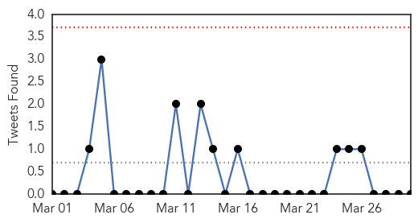

30 Day Trends
Web: 0 alerts, 0 warnings
Twitter: 0 alerts, 0 warnings
Top Articles:
- 0.950
- SGGP English Edition- Ministry launches campaign against human transmission of bird flu
- 0.917
- Chicago Tribune
- 0.917
- Chicago Tribune
- 0.917
- Chicago Tribune
- 0.917
- Chicago Tribune
- 0.917
- Chicago Tribune
- 0.917
- Chicago Tribune
- 0.917
- Chicago Tribune
- 0.917
- Chicago Tribune
- 0.917
- Chicago Tribune
- 0.917
- Chicago Tribune
- 0.917
- Chicago Tribune
- 0.883
- KRNV, Reno, NV
- 0.866
- Tepco to hold news conference on business plan at 0900 GMT
- 0.822
- Illegally manufactured Mexican-style cheese causing foodborne illness
- 0.802
- Collective will can curb TB epidemic
- 0.783
- TB outbreak in cats could strengthen argument for badger cull
- 0.649
- Ethiopia - Epidemics (ECHO Daily Flash - 29 March 2014) - Ethiopia
- 0.617
- Drink bowser water at own risk
- 0.603
- Deadly cases of Tuberculosis soar in family pets
- 0.556
- Over a million flee South Sudan conflict
- 0.555
- WHO delivers urgently-needed medicines and medical supplies to Lattakia - Syrian Arab Republic
- 0.541
- ‘Misdiagnosis’ of Lyme disease fells Coast woman
- 0.518
- One million forced from homes in South Sudan
- 0.512
- Cows Offer Hope Against Human Illness
Top Tweets:
-
No tweets found for Mar 30, 2014
Web/News Articles

Tweets
Article Locations